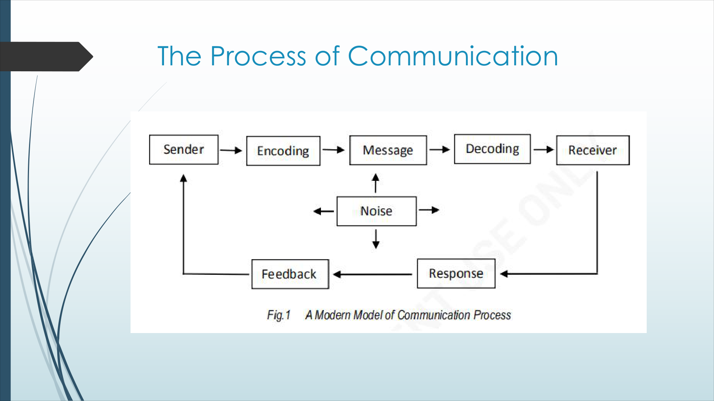
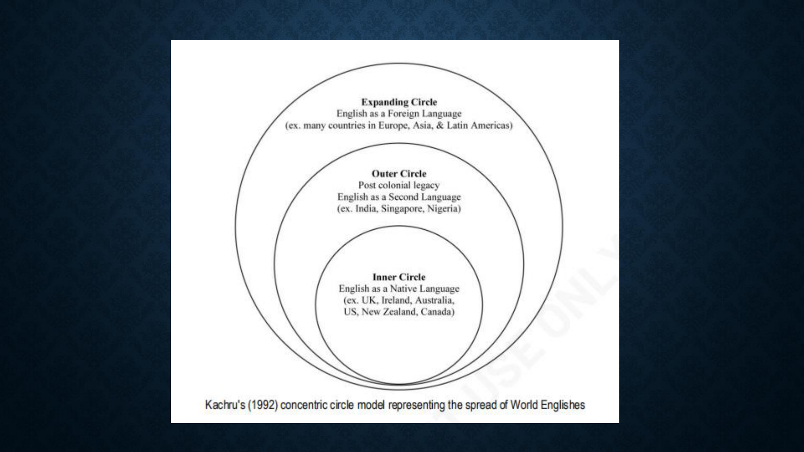

Understand the concept
Read the compact lesson cards. Focus on the definition and the clue for recognizing it in a situation.
MidSummer Quiz Prep
A quiet study website for understanding, analysis, and fast practice before tomorrow.
Start Here
Do not memorize first. Understand the pattern, then drill. Your PurCom quiz is expected to be more analysis and situational, so the site is built around recognition clues.
Read the compact lesson cards. Focus on the definition and the clue for recognizing it in a situation.
Use the classification questions for registers, language styles, high and low context cultures, English varieties, and World Englishes circles.
After each quiz item, read the explanation. If you can explain why, you are ready for analysis-type questions.


Purposive Communication
Read these like exam patterns. Ask: what is happening, what concept fits, and what clue in the situation proves it?
Life, Works, and Writings of Jose Rizal
This section covers the uploaded Rizal handout: RA 1425, hero concepts, Rizal as symbol, 19th century context, memoirs, influences, scholarship, Dapitan, science, and art.
Exam Drill
Choose a subject and quiz type. The app gives instant feedback and explains the reasoning.
Last-Minute Recall
Use the search if you need a quick definition, example, person, date, or classification clue.